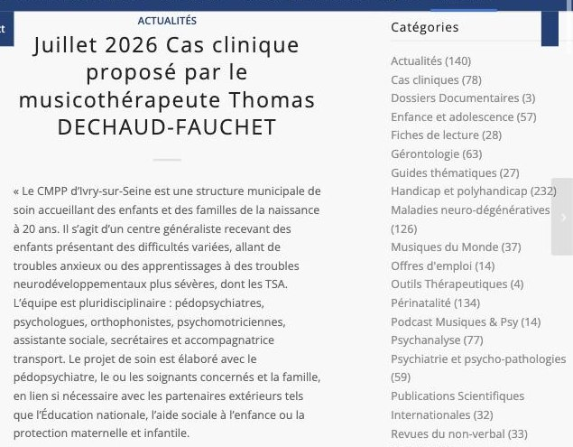
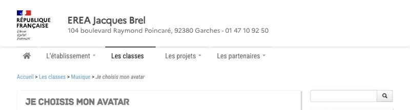
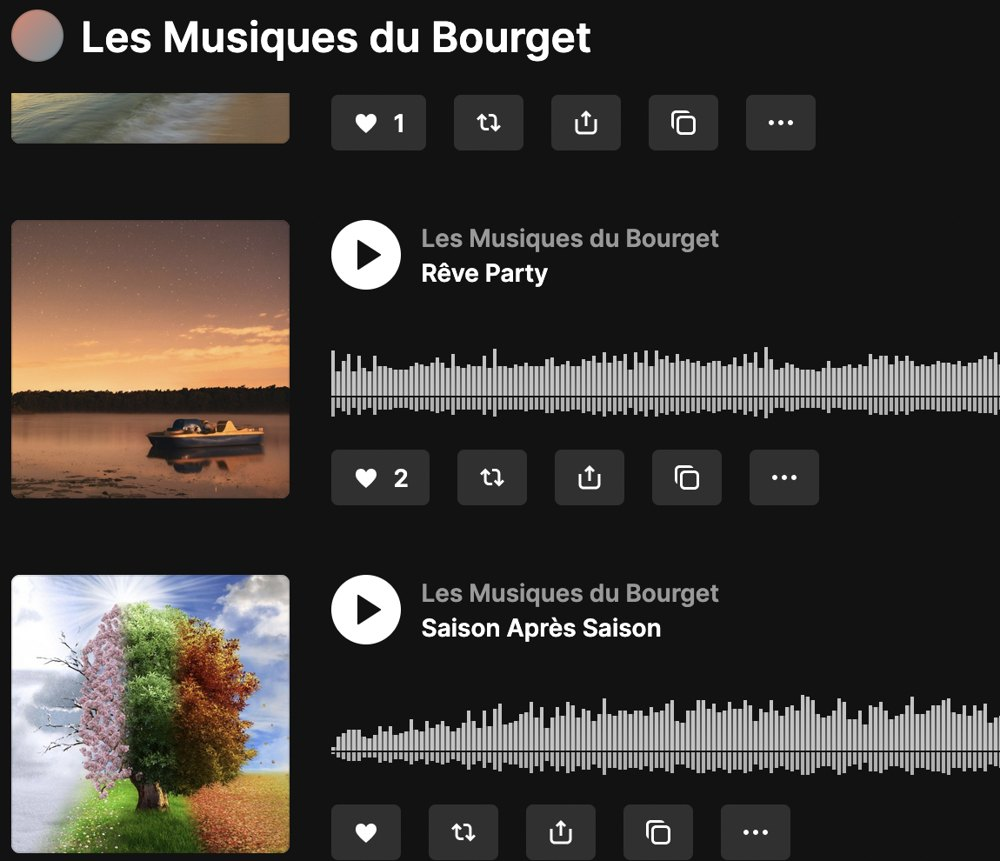

Musicothérapie
Je suis musicothérapeute clinicien, d’orientation psychanalytique. Mon travail s’appuie notamment sur Winnicott, Bion, Anzieu et Stern.
Ce que je propose
- Ateliers de création musicale en institution, jusqu’à l’enregistrement et la diffusion des morceaux.
- Séances d’écoute, de manipulation et d’exploration sonore, tournées vers le bien-être.
- Séances d’hypnose sonore.
- Jeux d’improvisation, de pulsation et de rythme sur instruments numériques, en groupe ou en individuel.
- Projets sonores et vidéo avec des élèves, comme la création d’avatars.
Réalisations

Un cas clinique
2026
Publié par la Société Française de Musicothérapie en juillet 2026, à partir de mon travail au CMPP d’Ivry-sur-Seine.

Je choisis mon avatar
2022-2024
Ateliers de création d’avatars avec la classe du Grand Tremplin de l’EREA Jacques-Brel, à Garches.

Les Musiques du Bourget
2021-2024
Créations musicales des ateliers de la Clinique Bourget, publiées sur SoundCloud.
Lieux d’exercice
- CMPP d’Ivry-sur-Seine
- Ramsay Santé Clinique du Bourget
- Ramsay Santé Clinique du Bois d'Amour
- EREA Jacques-Brel, Garches
<
Formation
Certification reconnu par l'Etat par VAE de musicothérapie clinique, 2026 à l'AMB (Atelier de musicothérapie de Bourgogne)